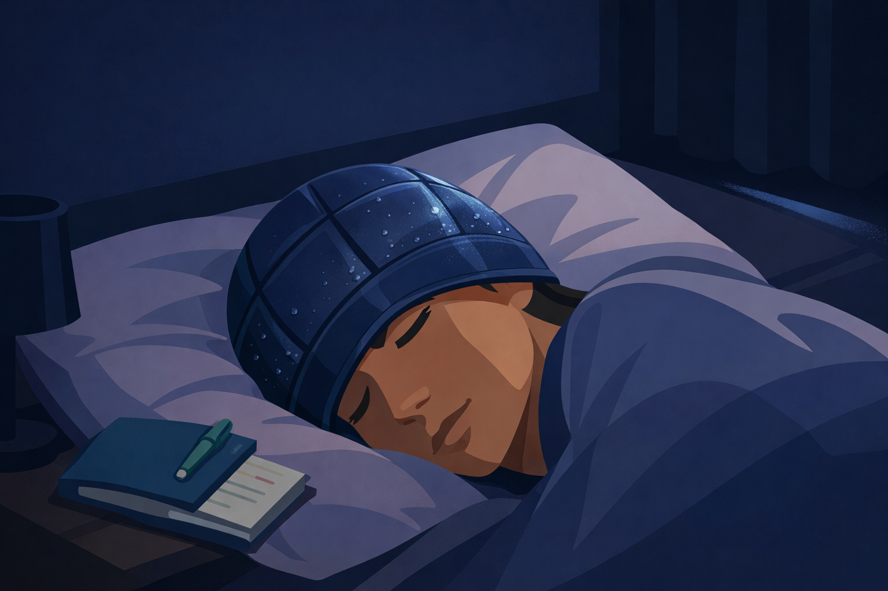
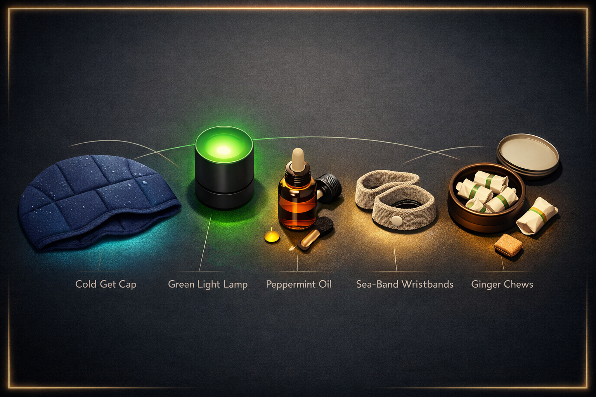

By Rustam Iuldashov
30 years lived experience with chronic migraine | Sources: 20 peer-reviewed references including Journal of Clinical Nursing (meta-analysis, n=224), Frontiers in Neurology (Lipton & Burstein, 2023), Cochrane Database (n=9,847) | Last updated: March 24, 2026
Medical Review: This content is based on peer-reviewed research from Journal of Clinical Nursing, Cephalalgia, Frontiers in Neurology, The Lancet, Cochrane Database of Systematic Reviews, Korean Journal of Family Medicine, American Journal of Emergency Medicine, Nature Reviews Disease Primers, and Current Pain and Headache Reports.
Important Notice: This article is for informational purposes only and does not replace professional medical advice. Always consult your neurologist or healthcare provider before changing your migraine management approach.
Key Takeaways
- Cold therapy is the most evidence-supported non-medication acute intervention for migraine. A 2023 meta-analysis of 224 patients found cold-gel caps significantly reduced pain within 30 minutes (SMD −3.21).[2]
- Narrow-band green light (520–530 nm) reduces both attack frequency and acute pain for the majority of users in clinical studies — via a documented endogenous opioid mechanism.[7][8]
- Topical peppermint oil (10% dilution) has RCT evidence for headache relief comparable to acetaminophen. Use it as an adjunct, not a replacement for stronger treatment.[10]
- PC6 acupressure wristbands address nausea specifically — with Cochrane-level evidence across 9,847 participants. They do not treat headache pain.[14]
- Ginger has emerging evidence for both pain relief and nausea reduction in migraine. If vomiting is active, choose chews or tea over capsules.[16]
- A dark, quiet room is active treatment — not just comfort. Reducing sensory load directly reduces trigeminovascular activation.[18]
The medication is somewhere in the other room. Or it’s already been taken, and it isn’t working fast enough. Or you’re pregnant, or breastfeeding, or you’ve simply decided you don’t want to live attack-to-attack on pills alone.
In those moments, the question isn’t philosophical. It’s urgent: what can I actually do right now?
I’ve lived with migraine for 30 years. I’ve tried most of what’s on this list. Some of it works. Some of it is expensive theater. Here’s what the science actually says.
⚠️ When to Seek Emergency Help
The tools in this article are for known migraine attacks. If you experience a sudden, severe headache that is unlike any previous migraine — sometimes described as “the worst headache of your life” — seek emergency care immediately. This may be a sign of a serious neurological event such as subarachnoid hemorrhage.
Also seek emergency evaluation if your headache is accompanied by: sudden confusion or speech difficulty, vision loss, facial drooping, weakness or numbness on one side of the body, fever with stiff neck, or headache following a head injury.
Do not use this article to self-diagnose or to delay evaluation of new or changing headache symptoms. Call your local emergency number immediately.
The Cold Cap: Your Most Reliable Ally
If you’re going to own one thing on this list, make it this.
Cold therapy is the most commonly used non-pharmacological self-care method among people with migraine — the #1 choice for attacks without aura, #2 for attacks with aura.[1] That’s not marketing. That’s community practice backed by decades of use — and science has finally caught up.
A 2023 systematic review and meta-analysis in the Journal of Clinical Nursing analyzed six controlled studies, four of them RCTs, covering 224 patients. Cold interventions — gel headbands, cold-gel caps, cold wraps — significantly reduced pain on the Visual Analog Scale within 30 minutes of application (standardized mean difference: −3.21; 95% CI: −5.94 to −0.48).[2] That’s a large effect. At 24 hours, the benefit faded — so think of cold as an acute weapon, not a cure.
Why does it work? Cold constricts blood vessels, reducing vasodilation in the trigeminovascular system. It slows nerve conduction — numbing pain signals on their way to the cortex. And the compression that comes with a well-fitted cap delivers its own independent relief.[3]
The migraine community confirms this at scale. On r/migraine, ice caps are mentioned more often than any other non-medication tool. “The first thing I reach for” appears over and over. But not all caps are equal — you want light-blocking, gentle compression, at least 20 minutes of cold. Targeting the back of the neck matters too: that’s where the carotid arteries run, carrying blood to the brain.
How to use it
- Apply at the first sign of pain — ideally at prodrome, certainly at onset
- Never apply ice directly to skin — use a cloth barrier or choose a gel cap
- Keep sessions to 15–20 minutes; cold-induced headache is a real risk for some migraineurs[4]
- Target forehead, temples, and back of the neck for maximum coverage

Green Light: The Strangest Tool That Actually Works
This one sounds like pseudoscience. It isn’t.
In 2016, Harvard neurologist Rami Burstein and colleagues discovered something unexpected: while all wavelengths of light worsen photophobia during a migraine, one narrow band — green, around 530 nanometers — was uniquely tolerated. It generated the smallest electrical signals in the retina and the smallest responses in the cortex.[5] Green light wasn’t just less harmful. It appeared to be analgesic.
Animal studies confirmed the mechanism: green light activates endogenous opioid pathways and suppresses the trigeminovascular neurons responsible for pain transmission.[6] The brain has, apparently, a dedicated pain-quieting response to this specific wavelength.
Human trials followed. A 2021 crossover clinical trial in Cephalalgia enrolled 29 patients — 7 episodic, 22 chronic migraine. After 10 weeks of daily 1–2 hour green LED exposure, chronic migraine patients dropped from roughly 22 headache days per month to approximately 9.[7] A 2023 real-world study by Lipton, Melo-Carrillo, and Burstein in Frontiers in Neurology assessed active attacks: 61% of participants were responders, with relief in at least half their attacks. Forty-two percent were super-responders — improvement in three out of four or more attacks after just two hours with the lamp.[8]
The honest caveat: these are open-label studies. Placebo is possible. Larger blinded trials are ongoing. But the biological mechanism is solid, the safety profile is excellent, and the effect sizes are clinically meaningful for a zero-risk intervention.
How to use it
- Get a dedicated narrow-band green LED lamp (520–530 nm) — regular “green” household bulbs are not the same thing
- Use 1–2 hours daily — preventively to reduce frequency, or during an attack with all other lights off
- Wavelength specificity matters: look for products that specify the nm range
Peppermint Oil: Real Benefits, Precise Application
Peppermint oil is simultaneously one of the most overhyped and most underprescribed remedies in migraine self-care. The difference comes down entirely to how you use it.
The active compound is menthol. Applied topically to the forehead and temples, menthol generates a prolonged cooling sensation by altering calcium channels in skin cold-receptors. It increases local blood flow. It has mild muscle-relaxing properties.[9]
The evidence is better than most people realize. A landmark double-blind RCT compared 10% peppermint oil in ethanol against 1,000 mg acetaminophen across 164 headache attacks in 41 patients. Peppermint oil was as effective as acetaminophen at 60 minutes — with no adverse events.[10] A separate double-blind RCT found that intranasal 1.5% peppermint oil reduced headache intensity and frequency comparably to 4% intranasal lidocaine, a pharmacological standard.[11]
Here’s the honest counterweight: a 2024 systematic review and meta-analysis of essential oils across 7 RCTs and 240 participants found no statistically significant difference in headache severity compared to placebo in 5 of those 7 trials.[12] The evidence is mixed. Peppermint oil works best as an adjunct — it dampens pain signals, eases nausea, creates a sensory “distraction” — but it won’t abort a severe attack on its own.
How to use it
- Dilute to 10% in ethanol or a carrier oil — never apply undiluted
- Apply to forehead and temples — not near eyes
- Inhaling directly from the bottle helps with nausea as an adjunct
- Caution: strong scents trigger attacks in roughly 70% of migraineurs[13] — test a small amount first
Acupressure Wristbands (Sea-Bands): Useful — But Not for Your Head
Here’s the misunderstanding baked into every migraine listicle that includes these: acupressure wristbands don’t treat pain. They treat nausea. And for nausea, they have real evidence.
The PC6 acupoint — located on the inner wrist, about three finger-widths from the wrist crease — has been studied in 77 randomized controlled trials involving 9,847 participants, compiled in a 2025 Cochrane network meta-analysis.[14] PC6 stimulation meaningfully reduces the incidence of nausea and vomiting across multiple clinical contexts. The evidence is robust.
Nausea affects 60–90% of migraineurs during attacks.[15] It’s often the second most disabling symptom. For those who can’t tolerate oral medication because they’re already vomiting, or who simply want a zero-side-effect backup option, these bands belong in the toolkit.
What they won’t do: reduce headache intensity, shorten attack duration, or prevent the next attack. Keep expectations clear, and they become genuinely useful.
How to use them
- Position the plastic button over the PC6 point — inner wrist, two to three finger-widths up from the crease, center
- Wear on both wrists throughout the attack
- Sea-Band is the most studied and widely available brand
Ginger: The Underrated Antiemetic With a Pain Bonus
In the migraine community, ginger is mostly discussed as a nausea remedy. It’s a good one. But recent data suggest it also has acute pain-relieving effects — and the mechanism is plausible.
Ginger’s active compounds — 6-gingerol, shogaols — inhibit prostaglandin synthesis via COX-1 and COX-2 pathways, similar to NSAIDs. They also block serotonin receptors involved in nausea.[17] The effect isn’t magic; it’s pharmacology.
A 2021 meta-analysis pooling 227 patients across three RCTs found that ginger was associated with a significantly higher proportion of patients who were pain-free at two hours (RR = 1.79; 95% CI: 1.04–3.09).[16] More consistently — and more reliably — ginger halved the risk of migraine-related nausea and vomiting compared to placebo (RR = 0.48; 95% CI: 0.30–0.77).[16] The evidence base is still small. No formal clinical recommendations are possible yet. But the risk-to-benefit ratio is excellent.
The Reddit migraine community uses ginger chews — especially the Gin-Gins brand — as a portable nausea option. “Better than nothing when I can’t keep anything down” is the consistent report from users in multiple large threads.
How to use it
- At attack onset: 400–500 mg of standardized ginger extract (5% gingerols) or 1 teaspoon of fresh grated ginger in warm water
- If you’re already vomiting, capsules and extract are the wrong format — your stomach won’t absorb them. Choose ginger chews or warm ginger tea: they dissolve faster, with less demand on a nauseated gut
- Ginger chews are portable — keep them in your bag alongside the Sea-Bands
The Dark, Quiet Room: The Most Underappreciated Tool of All
No gadget replaces this. Not a single one.
Photophobia affects up to 80% of migraineurs during attacks. Phonophobia affects a similar proportion.[18] Every source of sensory input during an attack is additional neural load on an already hyperexcitable brain — more input to a trigeminovascular system already firing at the wrong threshold.
A dark, quiet room isn’t comfort. It’s active treatment. It reduces the signal noise that keeps the attack alive.
Sleep, if you can reach it, is one of the most effective migraine abortives known — it resets cortical spreading depression and restores normal neurological function for many people.[19] Blackout curtains, earplugs, and noise-canceling headphones are inexpensive tools that deliver real results. On r/migraine, the nearly universal baseline is: dark room + ice cap, then everything else.
What Doesn’t Have Good Evidence (Yet)
Pressure-only headbands (no cooling): Compression may contribute to cold cap effectiveness, but standalone pressure bands without a cooling element haven’t been studied in controlled migraine trials.
Castor oil on the forehead: Popular in some communities online. No peer-reviewed data.
Menthol vapor and inhaled crystals: Related to peppermint, but uncontrolled concentrations and no specific migraine RCT data.
This isn’t a dismissal. Absence of evidence is not evidence of absence. But if you’re spending money on these tools, spend it knowing the data isn’t there yet. Start with what has been studied. Build from evidence outward.
Building Your Personal Toolkit
Migraine is biologically heterogeneous.[20] What relieves one person may do nothing for another. The goal is a layered toolkit — not a single magic fix.

For acute pain: Cold cap (forehead + temples + neck) + dark, quiet room. These are your tier-one tools — apply immediately at onset.
For nausea: PC6 acupressure wristbands on both wrists + ginger chews or warm ginger tea. If vomiting is active, skip capsules entirely.
For sensory relief: Topical peppermint oil (10% dilution) on temples and forehead. Adjunct, not primary treatment.
For frequency reduction over weeks: Daily narrow-band green light exposure (1–2 hours, 520–530 nm lamp).
This is exactly why I built Migraine Companion. You can log which non-medication tools you used — the ice cap, the green light, the ginger — and the app will show you mathematically which ones actually shorten your attacks. Stop guessing. Start tracking your personal toolkit.
No toolkit is complete without knowing yourself. That’s not a platitude — it’s neurology.
✨ Build Your Toolkit with Ask Mi
Not sure whether to invest in a green light lamp or try peppermint oil first? Head over to Ask Mi on our website. Describe your most bothersome symptoms — severe nausea, intense light sensitivity, attacks that hit at night — and the AI will recommend a personalized, evidence-based toolkit tailored to your specific migraine profile.
✨ Ask Mi about my toolkitKey Takeaways
- Cold therapy is the most evidence-supported non-medication acute intervention for migraine. Apply a cold-gel cap or wrap at attack onset. Target forehead, temples, and back of neck.[2]
- Narrow-band green light (520–530 nm) reduces both attack frequency and acute pain for the majority of users in clinical studies. A dedicated lamp and 1–2 hours of daily use matter.[7][8]
- Topical peppermint oil (10% dilution) has RCT evidence for headache relief comparable to acetaminophen. Use it as an adjunct, not a replacement for stronger treatment.[10]
- PC6 acupressure wristbands address nausea specifically — with Cochrane-level evidence across 9,847 participants. They don’t treat headache pain.[14]
- Ginger has emerging evidence for both pain relief and nausea reduction. If vomiting is active, choose chews or tea over capsules — faster absorption, less demand on a nauseated gut.[16]
- A dark, quiet room is active treatment — not just comfort. Reducing sensory load directly reduces trigeminovascular activation.[18]
⚕️ Important Medical Disclaimer
This article is for informational and educational purposes only and does not constitute medical advice, diagnosis, or treatment. The author, Rustam Iuldashov, is not a licensed physician, neurologist, or healthcare professional. He is a patient advocate with 30 years of personal experience living with chronic migraine.
All clinical claims in this article are sourced from peer-reviewed research published in indexed medical journals. Study designs and sample sizes are noted where applicable.
Non-medication tools described in this article are intended as adjuncts to — not replacements for — evidence-based medical treatment. If you experience a sudden, severe, or unusual headache unlike your typical migraine, seek emergency medical care immediately rather than relying on self-care tools.
Always consult a qualified healthcare provider for questions about your individual health, migraine treatment, or medication decisions. This content was last reviewed for accuracy on March 24, 2026.
References
- Sprouse-Blum AS, Gabriel AK, Brown JP, Yee MH. “Randomized Controlled Trial: Targeted Neck Cooling in the Treatment of the Migraine Patient.” Hawaii Journal of Medicine & Public Health, 72(7):237–241 (2013). doi:10.1177/0333102413493206. Study design: RCT. n=98.
- Hsu YY, Chen CJ, Wu SH, Chen KH. “Cold intervention for relieving migraine symptoms: A systematic review and meta-analysis.” Journal of Clinical Nursing, 32(11-12):2455–2465 (2023). doi:10.1111/jocn.16368. Study design: Systematic review & meta-analysis. n=224.
- Diamond S, Freitag FG. “Cold as an adjunctive therapy for headache.” Postgraduate Medicine, 79(1):305–309 (1986). doi:10.1080/00325481.1986.11699255. Study design: Clinical review.
- Kraya T, Bode A, Hirsch W, et al. “Prevalence of cold-stimulated headache in headache patients.” Cephalalgia, 39(5):579–585 (2019). doi:10.1177/0333102418776767. Study design: Observational cross-sectional. n=200.
- Noseda R, Bernstein CA, Nir RR, et al. “Migraine photophobia originating in cone-driven retinal pathways.” Brain, 139(7):1971–1986 (2016). doi:10.1093/brain/aww119. Study design: Electrophysiology/neuroimaging. n=41.
- Martin LF, Cheng K, Washington SM, et al. “Green light exposure elicits anti-inflammation, endogenous opioid release and dampens synaptic potentiation to relieve post-surgical pain.” Journal of Pain, 24(3):509–529 (2023). doi:10.1016/j.jpain.2022.10.011. Study design: Animal model + mechanistic.
- Martin LF, Patwardhan AM, Jain SV, et al. “Evaluation of green light exposure on headache frequency and quality of life in migraine patients: A preliminary one-way cross-over clinical trial.” Cephalalgia, 41(2):135–147 (2021). doi:10.1177/0333102420956711. Study design: Crossover clinical trial. n=29.
- Lipton RB, Melo-Carrillo A, Severs M, Reed M, Ashina S, Houle T, Burstein R. “Narrow band green light effects on headache, photophobia, sleep, and anxiety among migraine patients: an open-label study conducted online using daily headache diary.” Frontiers in Neurology, 14:1282236 (2023). doi:10.3389/fneur.2023.1282236. Study design: Prospective observational (open-label).
- Göbel H, Schmidt G, Soyka D. “Effect of peppermint and eucalyptus oil preparations on neurophysiological and experimental algesimetric headache parameters.” Cephalalgia, 14(3):228–234 (1994). doi:10.1046/j.1468-2982.1994.014003228.x. Study design: Controlled experimental. n=32.
- Göbel H, Fresenius J, Heinze A, Dworschak M, Soyka D. “Effectiveness of Oleum menthae piperitae and paracetamol in therapy of headache of the tension type.” Nervenarzt, 67(8):672–681 (1996). PMID:8805113. Study design: RCT, double-blind crossover. n=41 patients, 164 attacks.
- Rafieian-Kopaei M, et al. “Comparing the effect of intranasal lidocaine 4% with peppermint essential oil drop 1.5% on migraine attacks: A double-blind clinical trial.” International Journal of Preventive Medicine (2019). PMC6647908. Study design: Double-blind RCT. n=≈60.
- Murtey P, Mohd Noor N, Ishak A, Idris NS. “Essential Oils as an Alternative Treatment for Migraine Headache: A Systematic Review and Meta-Analysis.” Korean Journal of Family Medicine, 45(1):18–26 (2024). doi:10.4082/kjfm.23.0106. Study design: Systematic review & meta-analysis. n=240.
- Kelman L. “The triggers or precipitants of the acute migraine attack.” Cephalalgia, 27(5):394–402 (2007). doi:10.1111/j.1468-2982.2007.01303.x. Study design: Cross-sectional survey. n=1,207.
- Lee A, Chan SK, Fan LT. “Stimulation of the wrist acupuncture point PC6 for preventing postoperative nausea and vomiting: a network meta-analysis.” Cochrane Database of Systematic Reviews (2025). doi:10.1002/14651858.CD003281.pub5. Study design: Network meta-analysis (Cochrane). n=9,847.
- Ashina M, Katsarava Z, Do TP, et al. “Migraine: Epidemiology and systems of care.” The Lancet, 397(10283):1485–1495 (2021). doi:10.1016/s0140-6736(20)32160-7. Study design: Systematic review.
- Xu J, Zhang F, Tian H, et al. “The efficacy of ginger for the treatment of migraine: A meta-analysis of randomized controlled studies.” American Journal of Emergency Medicine, 44:10–14 (2021). doi:10.1016/j.ajem.2020.11.030. Study design: Meta-analysis. n=227.
- Martins LB, Rodrigues AMDS, Rodrigues DF, et al. “Double-blind placebo-controlled randomized clinical trial of ginger (Zingiber officinale) addition in migraine acute treatment.” Cephalalgia, 39(1):68–76 (2019). doi:10.1177/0333102418776016. Study design: RCT, double-blind placebo-controlled. n=60.
- Ashina S, Bentivegna E, Martelletti P, Eikermann-Haerter K. “Structural and functional brain changes in migraine.” Pain and Therapy, 10(1):211–223 (2021). doi:10.1007/s40122-021-00240-5. Study design: Review.
- Vgontzas A, Pavlović JM. “Sleep disorders and migraine: review of literature and potential pathophysiology mechanisms.” Current Pain and Headache Reports, 22(5):36 (2018). doi:10.1007/s11916-018-0689-6. Study design: Narrative review.
- Ferrari MD, Goadsby PJ, Burstein R, et al. “Migraine.” Nature Reviews Disease Primers, 8:2 (2022). doi:10.1038/s41572-021-00328-4. Study design: Disease primer/review.

How We Create Content
- Peer-reviewed sources only. This article cites Journal of Clinical Nursing, Cephalalgia, Brain, Frontiers in Neurology, Journal of Pain, The Lancet, Cochrane Database of Systematic Reviews, Korean Journal of Family Medicine, American Journal of Emergency Medicine, Nature Reviews Disease Primers, Pain and Therapy, and Current Pain and Headache Reports.
- Study transparency. Study design and sample sizes noted for all clinical references.
- Source verification. All 20 claims backed by numbered references with DOI links.
- Experience + Science. 30 years personal migraine experience combined with peer-reviewed evidence.
- Regular updates. Articles reviewed when significant new research emerges.
- No conflicts of interest. No funding from device manufacturers, pharmaceutical companies, or supplement brands.
Log Your Toolkit. See What Actually Works for You.
Migraine Companion lets you log which non-medication tools you used alongside your attack diary — so you can see mathematically which ones shorten your attacks. Built by someone who has lived this for 30 years.
Last reviewed: March 2026
Next scheduled review: September 2026